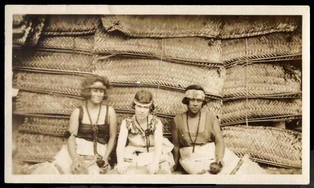

Margaret Mead
Margaret Mead’s generation lived through the most rapid period of change in human history, before or since. People born in 1901, like her, had entered world that was still lit by candles, gas lamps, and kerosene lanterns a world in which heavier-than-air flight was reckoned “a vain fantasy,” China was an ancient dynastic empire, the British Empire covered nearly one fourth of the planet’s land area, no nation allowed women to vote, and hundreds of thousands still carried the living memory of being enslaved. And the youthful, utopian Margaret Mead of the 1920s and 1930s had been almost unique in predicting the scope of the changes to come. While her peers continued to imagine the future as one dominated by Western empires and by traditional social norms, she predicted an age of upheaval that would alter the experience of being human itself—an era of transformed consciousness. —Benjamin Breen1
1 Benjamin Breen, Tripping on utopia: Margaret Mead, the Cold War, and the troubled birth of psychedelic science, First edition. (Grand Central Publishing, Hachette Book Group, 2024), 266.
Margaret Mead already had her PhD in hand when she traveled across the United States (by train with Ruth Benedict) and then further from San Francisco to Honolulu and onward to Samoa in 1925. Her fieldwork there on adolescent sexuality, published in Coming of Age in Samoa2 generated extensive publicity and launched her career as a public intellectual. Her subsequent work in Sex and Temperament in Three Primitive Societies3 profiled three New Guinea cultures with distinct gender systems, and explored the question of what happens when an individual’s emotional disposition is at odd’s with society’s gender expectations.
2 Margaret Mead, Coming Of Age In Samoa (Penguin, 1943), http://archive.org/details/in.ernet.dli.2015.189627.
3 Margaret Mead, Sex and Temperament in Three Primitive Societies (Routledge, 1935).

4 Patricia A. Francis and Mary Wolfskill, Samoa: The Adolescent Girl - Margaret Mead: Human Nature and the Power of Culture |, 2001, https://www.loc.gov/exhibits/mead/field-samoa.html.
Mead’s social relevance and ultimately the popularity of her work is largely a product of her ability to present ethnographic conclusions as relevant to American society, rather than a collection of curiosities that describe peoples seen as primitive and lesser. We can see in this an intellectual move to position ethnographic expertise as a resource for understanding all human societies, including her own. However, it’s also worth taking the time to read Mead’s latter chapters of these works as ethnographic treatment’s of Western culture in their own right.
At the start of World War II, Mead joined in a group of four anthropologists – Ruth Benedict, Gregory Bateson, and Geoffrey Gorer – in the Committee for National Morale. “From the first we felt it was only a matter of time before this country would be drawn into the conflict, and we hoped to put our growing knowledge of the human sciences at the services of the Allied fight against Nazism.” Mead’s main contribution was And Keep Your Powder Dry. In her introduction to a 1965 reprint, Mead looked back both on her practice of writing about Western culture in the final chapters of her previous books and on the sudden challenge of constructing an ethnographic description of her own culture.
My own interests had always turned on the relevance of the study of primitive peoples to our understanding of our own customary behavior and our attempts to modify it. Ruth Benedict had called anthropology the science of custom. And I had been in the habit of ending my books, which dealt with the ways faraway South Sea peoples worked out universal human problems, with a discussion of how some of my results could be applied to the modern world. But in 1939 we had no formal rules to go by in our new undertaking. We did not yet know how to combine anthropological detachment, which was achieved by traveling to and studying intensively a people distant in time and place, and awareness of our own culture in which we ourselves had a place.5
5 Margaret Mead, And keep your powder dry; an anthropologist looks at America., A new expanded ed. of a classic work on the American character. (Morrow, 1965).
Mead’s early work in Samoa ad New Guinea became the subject of a series of controversies, most visibly Derek Freeman’s 1983 Margaret Mead and Samoa: The Making and Unmaking of an Anthropological Myth. However, Freeman’s argument that Mead had been misled by her Samoan interviewees has largely been discredited in the discipline.
Other controversies of interpretation surround the particular characterizations of the three cultures profiled in Sex and Temperament, where they interlock with the personal lives of Mead and her collaborators Reo Fortune and Gregory Bateson, the former her husband at the time of that fieldwork and the latter her future spouse. David Lipset reviews Mead’s work and rival interpretations in “Rereading Margaret Mead’s Sepik Triptych and its Ethnographic Critics.”6 Lise M. Dobrin and Ira Bashkow’s “The Truth in Anthropology Does Not Travel First Class”7 exposes the four-way correspondence behind Mead’s break with Fortune while defending the latter’s read of local mythology.
6 David Lipset, “Rereading Sex and Temperament : Margaret Mead’s Sepik Triptych and Its Ethnographic Critics,” Anthropological Quarterly 76, no. 4 (2003): 693–713, https://muse.jhu.edu/pub/35/article/48524.
7 Lise M. Dobrin and Ira Bashkow, “"The Truth in Anthropology Does Not Travel First Class": Reo Fortune’s Fateful Encounter with Margaret Mead,” Histories of Anthropology Annual 6, no. 1 (2010): 66–128, https://muse.jhu.edu/pub/17/article/398061.
8 Israel Shenker, “Anthropologists Clash over Their Colleagues’ Ethics in Thailand,” The New York Times, November 21, 1971, https://www.nytimes.com/1971/11/21/archives/anthropologists-clash-over-their-colleagues-ethics-in-thailand.html.
Mead was active in the American Association of Anthropology, and its elected president in 1975. During the 1960s and 1970s, this pitted her in a generational struggle between older anthropologists like herself who had taken involvement in the US government’s overseas empire as a routine pre-requisite for their work, and a younger generation that was staunchly against the Vietnam War and developing a critique of anthropology’s implication in colonialism. (Mead and Bateson had both been involved with the Office of Strategic Services (OSS) during World War II, with Bateson’s involvement considerably deeper and extending to covert service in South Asia. However, he would more publicly repudiate this course by the late 1960s.) Eric Wolf, then a rising star in the discipline, publicly confronted Mead at the 1971 AAA meeting over her ethics report downplaying American social scientists’ collaboration in the Vietnam war effort, which had been exposed by a student report.8
Mead’s overall legacy was the subject of a 1992 book and a 2003 conference at the Barnard Center for Research on Women. The speeches from the latter are collected as an issue of Scholar and Feminist Online.9 Leonora Foerstel and Angela Gilliam’s Confronting the Margaret Mead Legacy: Scholarship, Empire, and the South Pacific represents the primary example of post/anticolonial critique of Mead’s work. As Foerstel observes:
9 Margaret Mead’s Legacy: Continuing Conversations, n.d., https://sfonline.barnard.edu/margaret-meads-legacy-continuing-conversations/.
We are now at the point in history where the views of Western anthropologists are no longer judged by their peers alone, but are being examined by rising new scholars from Pacific islands, scholars whose families and culture had been the subject of anthropological study. These indige- nous scholars reject Western racism and remain suspicious of the work of Mead and others, work which propagated and imposed the Western model for progress and change.10
10 Lenora Foerstel and Angela Gilliam, Confronting the Margaret Mead legacy: Scholarship, empire, and the South Pacific (Temple University Press, 1992), 72.
Three of the authors are scholars at the University of Papua New Guinea. The co-editors also narrate the Mead-Wolf-Vietnam controversy in chapter 5.

Fieldwork by Margaret Mead
List consolidated from Library of Congress. Manuscript Division11
11 Margaret Mead Papers and the South Pacific Ethnographic Archives: A Finding Aid to the Collection in the Library of Congress, 2024, https://findingaids.loc.gov/exist_collections/ead3pdf/mss/2009/ms009117.pdf.
| Year | Field Visit |
|---|---|
| 1925-1926 | American Samoa (study of adolescent girls) |
| 1928-1929 | Manus, Admiralty Islands (with Reo Fortune, study of young children) |
| 1930 | Omaha (Umonhon) Tribe, Nebraska |
| 1931-1933 | New Guinea (study of Arapesh, Biwat, and Chambri people) |
| 1936-1939 | Bali and New Guinea (study of Iatmul people) |
| 1953 | Manus, Admiralty Islands (with Theodore and Lenora Schwartz) |
| 1957-1958 | Bali (with Ken Heyman) |
| 1964-1965 | Manus, Admiralty Islands |
| 1967 | Manus, Admiralty Islands; New Guinea |
| 1971 | Manus, Admiralty Islands; New Guinea and American Samoa |
| 1973 | Hoskins Bay, New Britain (study of Arapesh people) |
| 1975 | Manus, Admiralty Islands |
| 1977 | Bali |
Biography
Margaret Mead’s life is the subject of books including:
- Charles King’s Gods of the Upper Air on multiple members of the Boas circle.
- Mary Catherine Bateson’s With a Daughter’s Eye: A Memoir of Margaret Mead and Gregory Bateson on her parents.
- Paul Shankman’s The Trashing of Margaret Mead on the posthumous Freeman controversy over her Samoa fieldwork.
- Elesha Coffman’s Margaret Mead: A Twentieth-Century Faith, which makes senes of the Christianity of a woman who once wrote, “Shorn of all the things in which I can’t believe—and don’t want to—an omnipotent God, immortality, and original sin—Christianity is still the most beautiful thing I know, and the fact that Jesus lived the most satisfactory justification of life.” See also, Coffman’s summaries of her favorite Mead books.
- Benjamin Breen’s Tripping on Utopia: Margaret Mead, the Cold War, and the Troubled Birth of Psychedelic Science12 on Mead and Bateson’s intersections with both early experiments in psychedelic use and covert experimentation organized by the US government.
- Lily King’s novel Euphoria, a very thinly pseudonymized retelling of Margaret Mead, Reo Fortune, and Gregory Bateson in Papua New Guinea, Euphoria fleshes out these young Euro-Americans rethinking gender and community in the 1930s. Substantial attention is paid to Mead and Bateson’s ill-fated theory of the Squares among cultural personalities and individuals, and its entanglement with the love triangle of these three.
- Deborah Blum’s Coming of Age: The Sexual Awakening of Margaret Mead, covering Mead’s education at Barnard/Columbia, fieldwork in Samoa, and summer in Europe, and relationships with Cressman, Benedict, Sapir, and Fortune from 1921 to 1926.
- Jean Walton’s Fair Sex, Savage Dreams: Race, Psychoanalysis, Sexual Difference devotes its last two chapters to Mead, with a lengthy interpretation of her conversation with James Baldwin in A Rap on Race.
- Nancy Lutkehaus’s Margaret Mead: The Making of an American Icon, which intertwines her look at Mead with “the study of fame … as a particular social practice” and of “the meanings associated with her that transcend or go beyond Mead.”
12 Breen, Tripping on utopia.